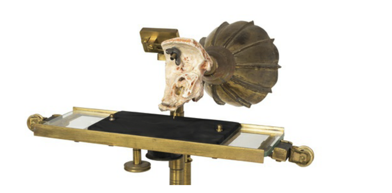
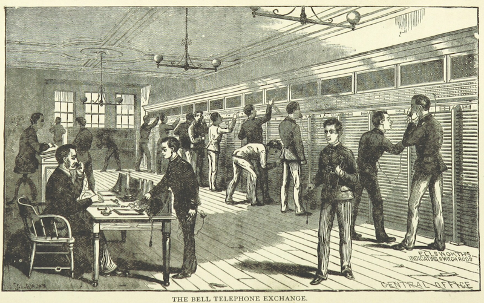

<!DOCTYPE html>
<html lang="en">
  <head>
    <meta charset="utf-8" />
    <meta name="viewport" content="width=device-width, initial-scale=1.0, maximum-scale=1.0, user-scalable=no" />

    <title></title>
    <link rel="stylesheet" href="dist/reveal.css" />
    <link rel="stylesheet" href="dist/theme/simple.css" id="theme" />
    <link rel="stylesheet" href="plugin/highlight/zenburn.css" />
	<link rel="stylesheet" href="css/layout.css" />
	<link rel="stylesheet" href="plugin/customcontrols/style.css">


    <script defer src="dist/fontawesome/all.min.js"></script>

	<script type="text/javascript">
		var forgetPop = true;
		function onPopState(event) {
			if(forgetPop){
				forgetPop = false;
			} else {
				parent.postMessage(event.target.location.href, "app://obsidian.md");
			}
        }
		window.onpopstate = onPopState;
		window.onmessage = event => {
			if(event.data == "reload"){
				window.document.location.reload();
			}
			forgetPop = true;
		}

		function fitElements(){
			const itemsToFit = document.getElementsByClassName('fitText');
			for (const item in itemsToFit) {
				if (Object.hasOwnProperty.call(itemsToFit, item)) {
					var element = itemsToFit[item];
					fitElement(element,1, 1000);
					element.classList.remove('fitText');
				}
			}
		}

		function fitElement(element, start, end){

			let size = (end + start) / 2;
			element.style.fontSize = `${size}px`;

			if(Math.abs(start - end) < 1){
				while(element.scrollHeight > element.offsetHeight){
					size--;
					element.style.fontSize = `${size}px`;
				}
				return;
			}

			if(element.scrollHeight > element.offsetHeight){
				fitElement(element, start, size);
			} else {
				fitElement(element, size, end);
			}		
		}


		document.onreadystatechange = () => {
			fitElements();
			if (document.readyState === 'complete') {
				if (window.location.href.indexOf("?export") != -1){
					parent.postMessage(event.target.location.href, "app://obsidian.md");
				}
				if (window.location.href.indexOf("print-pdf") != -1){
					let stateCheck = setInterval(() => {
						clearInterval(stateCheck);
						window.print();
					}, 250);
				}
			}
	};


        </script>
  </head>
  <body>
    <div class="reveal">
      <div class="slides"><section  data-markdown><script type="text/template"><!-- .slide: class="drop" -->
<div class="" style="position: absolute; left: 0px; top: 0px; height: 700px; width: 960px; min-height: 700px; display: flex; flex-direction: column; align-items: center; justify-content: center" absolute="true">

But first, have I shared this before?

[Open Notebook History](http://wcaleb.org/blog/open-notebook-history)

[Arming America Controversy](https://en.wikipedia.org/wiki/Arming_America)

[McDaniel's Open Notebook](http://wiki.wcaleb.rice.edu/) (and [one path](http://wiki.wcaleb.rice.edu/Historic%20Natchez%20Foundation#forrest-flinn-collection))
</div></script></section><section  data-markdown><script type="text/template"><!-- .slide: class="drop" -->
<div class="" style="position: absolute; left: 0px; top: 0px; height: 700px; width: 960px; min-height: 700px; display: flex; flex-direction: column; align-items: center; justify-content: center" absolute="true">

### Expectations for the 2nd Memex Check-in March 10

1. be on time!
2. if you haven't yet managed to make a public memex read the tech FAQ **carefully**
	- if you're choosing a private memex: you don't need the template! but you *do* need markdown links
3. ask for help **before** March 10th, and frame the request **usefully**
</div></script></section><section  data-markdown><script type="text/template"><!-- .slide: class="drop" -->
<div class="" style="position: absolute; left: 0px; top: 0px; height: 700px; width: 960px; min-height: 700px; display: flex; flex-direction: column; align-items: center; justify-content: center" absolute="true">

- have at least **another** five sources adequately translated into note form
	-  notes with the bibliographic info, general summary
	-   atomic notes as appropriate
	-   interlinkages
	-   links outwards to others' memexes, or hypothesis permalinked annotations
	-   maps of content as appropriate providing a useful 'way in' to your memex as suits your own research interests
</div>

<aside class="notes"><ul>
<li>&#39;adequately&#39;: the summary notes we more or less let slide, in terms of their form &amp; content; this will not be the case this time. THIS TIME, ADD THE DATE YOU MADE THE SOURCE NOTE.</li>
<li>atomic notes: observations with page numbers, clearly things you&#39;ve spotted in the readings. There should be atomic notes <strong>for each</strong> source note</li>
<li>interlinkages again. We will be looking for links to idea notes in particular this time, as appropriate.</li>
<li>maps of content. Not just lists of links, but different maps are suitable for different purposes.</li>
<li>IF YOU MAKE YOUR REPO PRIVATE, you do not have to use the template or the html export. BUT you <em>could</em> edit your notes to use regular markdown links. PRIVATE REPOS ONLY!!</li>
<li>Public Repos: if you have your system working, you need only add your notes to your /docs/ folder or re-export via the html export plugin</li>
</ul>
</aside></script></section><section  data-markdown><script type="text/template"><!-- .slide: class="drop" -->
<div class="" style="position: absolute; left: 0px; top: 0px; height: 700px; width: 960px; min-height: 700px; display: flex; flex-direction: column; align-items: center; justify-content: center" absolute="true">

## From This to That
<split no-margin>




</split>

<small>

model of phonautograph, CSTM; telephone image via [Quino Al, unsplash.com](https://unsplash.com/photos/xhGMQ_nYWqU)

</small>
</div></script></section><section  data-markdown><script type="text/template"><!-- .slide: class="drop" -->
<div class="" style="position: absolute; left: 0px; top: 0px; height: 700px; width: 960px; min-height: 700px; display: flex; flex-direction: column; align-items: center; justify-content: center" absolute="true">


<small>

[source](https://www.flickr.com/photos/britishlibrary/11096145013)

</small>
</div>

<aside class="notes"><p>the &#39;lover&#39;s telephone&#39;. toy becomes all the rage. depends on there being tension in the line. sound waves collected by the can causes the base to vibrate; tension on the string provides a medium for those vibrations to propagate along it, as waves.  (fad, gets to the us in the 1870s)</p>
</aside></script></section><section  data-markdown><script type="text/template"><!-- .slide: class="drop" -->
<div class="" style="position: absolute; left: 0px; top: 0px; height: 700px; width: 960px; min-height: 700px; display: flex; flex-direction: column; align-items: center; justify-content: center" absolute="true">

to speak of a 'telephone' in the age of telegraphy was to identify yourself as a huckster, a charlatan, a fraud: no one can transmit voice over a telegraph wire!

but the 'harmonic telephone': that was another matter.
</div>

<aside class="notes"><p>we&#39;ll get to that.</p>
</aside></script></section><section  data-markdown><script type="text/template"><!-- .slide: class="drop" -->
<div class="" style="position: absolute; left: 0px; top: 0px; height: 700px; width: 960px; min-height: 700px; display: flex; flex-direction: column; align-items: center; justify-content: center" absolute="true">

Competences, social necessities, accelerators, and breaks
</div>

<aside class="notes"><p>I asked you over reading week to try to identify some of these. suggestions? let&#39;s see how we match.</p>
</aside></script></section><section  data-markdown><script type="text/template"><!-- .slide: class="drop" -->
<div class="" style="position: absolute; left: 0px; top: 0px; height: 700px; width: 960px; min-height: 700px; display: flex; flex-direction: column; align-items: center; justify-content: center" absolute="true">

Dates for the 'invention' of the telephone:

- &shy;<!-- .element: class="fragment" data-fragment-index="1" -->1840 - Charles Page
- &shy;<!-- .element: class="fragment" data-fragment-index="2" -->1854 - Charles Bourseul
- &shy;<!-- .element: class="fragment" data-fragment-index="3" -->1854 - Antonio Meucci
- &shy;<!-- .element: class="fragment" data-fragment-index="4" -->1857 - Johann Philipp Reis
- &shy;<!-- .element: class="fragment" data-fragment-index="5" -->1864 - Innocenzo Manzetti
- &shy;<!-- .element: class="fragment" data-fragment-index="6" -->1876 - Bell vs Gray
- &shy;<!-- .element: class="fragment" data-fragment-index="7" -->1878 - Cyrille Duquet
- &shy;<!-- .element: class="fragment" data-fragment-index="8" -->1878 - Thomas Edison and Emile Berliner
- &shy;<!-- .element: class="fragment" data-fragment-index="9" -->1878 - David Edward Hughes
</div>

<aside class="notes"><p>all of these devices could be called &#39;telephone&#39;</p>
<ul>
<li>page - (us) galvanic music and transmission</li>
<li>bourseul - (france) described a system where voice makes/breaks electrical circuit; makes a disc at a distance repeat those make/breaks</li>
<li>meucci - (us) claims of an electromagnetic phone of the kind later realized by bell, but evidence is tendentious</li>
<li>Reis - an electrical device that could transmit voice sounds over distance</li>
<li>Manzetti - another tendentious claim</li>
<li>Bell vs Gray - dueling electromagnetic systems</li>
<li>Duquet - figures out how to put receiver/transmitter into a single device</li>
<li>Edison and Berliner, Hughes - figured out how to make use of variable resistence of carbon grains between plates of metal to imrpove signal</li>
<li></li>
</ul>
</aside></script></section><section  data-markdown><script type="text/template"><!-- .slide: class="drop" -->
<div class="" style="position: absolute; left: 0px; top: 0px; height: 700px; width: 960px; min-height: 700px; display: flex; flex-direction: column; align-items: center; justify-content: center" absolute="true">

## The necessary 'competences'
</div></script></section><section  data-markdown><script type="text/template"><!-- .slide: class="drop" -->
<div class="" style="position: absolute; left: 0px; top: 0px; height: 700px; width: 960px; min-height: 700px; display: flex; flex-direction: column; align-items: center; justify-content: center" absolute="true">


[source](https://commons.wikimedia.org/wiki/File:Ear_trumpet,_19th_century_Wellcome_M0013745.jpg)
</div>

<aside class="notes"><p>develop in the 17th c as signaling devices, as both receivers &amp; transmitters. Samuel Pepys: &#39;...and there did plainly hear the dancing of the oars of the boats in the Thames at Arudnel Gallery window, which witout it, I could not in the least do&#39;. apil 2 1668. </p>
<p>classically educated people in europe came to use the word &#39;telephone&#39; for any device that dealt with acoustics, sound-from-afar, whether electrical or note. Odd then that the string telephone should be called the &#39;lover&#39;s telegraph&#39;, but perhaps that&#39;s because a) you whispered and b) the string was such a conspicous part of it.</p>
</aside></script></section><section  data-markdown><script type="text/template"><!-- .slide: class="drop" -->
<div class="" style="position: absolute; left: 0px; top: 0px; height: 700px; width: 960px; min-height: 700px; display: flex; flex-direction: column; align-items: center; justify-content: center" absolute="true">


</div>

<aside class="notes"><p>Charles Wheatsone, whom we already met, was before telegraph days interested in sound. Invented a thing he called the Enchanted Lyre - connect the sound board of two instruments, notes played on one will sound on the other. in illustrtion, piano is in room above, lyre hanging in room below. play gently on piano, lyre will play &#39;of its own accord&#39;.</p>
</aside></script></section><section  data-markdown><script type="text/template"><!-- .slide: class="drop" -->
<div class="" style="position: absolute; left: 0px; top: 0px; height: 700px; width: 960px; min-height: 700px; display: flex; flex-direction: column; align-items: center; justify-content: center" absolute="true">

Page effect


</div>

<aside class="notes"><p>Page discovered that a horsehoe magnet in close proximity to a wire with an on/off current of electricity would make a ringing noise; he called this &#39;galvanic music&#39;. Found that he could vary the sound by altering the strength of the current. Later experimenters developed this idea and found for instance that a tuning fork could be made to vibrate through sympathetic vibration;  Later, the german physicist Hermann von Helmholtz was interested in the physics and perception of sound, and showed that one could make different vowel sounds just by varying electrical resonators.</p>
</aside></script></section><section  data-markdown><script type="text/template"><!-- .slide: class="drop" -->
<div class="" style="position: absolute; left: 0px; top: 0px; height: 700px; width: 960px; min-height: 700px; display: flex; flex-direction: column; align-items: center; justify-content: center" absolute="true">

### Follow the Money

- the results of this kind of work implied serious financial benefits to existing telegraphy
- different signals, sounding different notes, could be sent down a *single* wire
- ie, more messages on the same physical infrastructure
- such devices, if they could be built, were called *harmonic telephones*
</div>

<aside class="notes"><ul>
<li>Bell apparently misunderstood Helmholtz&#39;s work to mean he&#39;d transmitted multiple frequencies down a single wire</li>
</ul>
</aside></script></section><section  data-markdown><script type="text/template"><!-- .slide: class="drop" -->
<div class="" style="position: absolute; left: 0px; top: 0px; height: 700px; width: 960px; min-height: 700px; display: flex; flex-direction: column; align-items: center; justify-content: center" absolute="true">

string phone, megaphone, speaking tubes, ear trumps, sound resonators, wave theory of electormagnetism
</div>

<aside class="notes"><p>Michael Faraday proposes in 1840s that magnetic forces and light had a relationship of some kind; James Clerk Maxwell in 1865 proposes the idea of the electromagnetic field, and how waves propagate through it.</p>
</aside></script></section><section  data-markdown><script type="text/template"><!-- .slide: class="drop" -->
<div class="" style="position: absolute; left: 0px; top: 0px; height: 700px; width: 960px; min-height: 700px; display: flex; flex-direction: column; align-items: center; justify-content: center" absolute="true">

## missing piece

variable resistence

- M Clarac - French telegraph official - found tubes with powered carbon could be put under pressure; the amount of electrical resistence could be regulated through that pressure
- Lord Kelvin - had earlier shown that resistence to electricity in a wire could be modified by putting the wire under tension
</div>

<aside class="notes"><p>different materials conduct electricity in different ways, and can be modulated.</p>
</aside></script></section><section  data-markdown><script type="text/template"><!-- .slide: class="drop" -->
<div class="" style="position: absolute; left: 0px; top: 0px; height: 700px; width: 960px; min-height: 700px; display: flex; flex-direction: column; align-items: center; justify-content: center" absolute="true">

## missing piece

theory of language


[listen](http://www.firstsounds.org/sounds/Scott-Feaster-No-36.mp3) |
[see also this page](http://www.firstsounds.org/videos/)

(this is the device Bell tried to improve with an actual human ear)
</div>

<aside class="notes"><p>image - edouard leon scott de martinville, 1850s; cone shape horn at one end, collects vibrations from soundwaves, changing air pressure moves a diaphragm with attached stylus; as paper moves underneath, a representation of soundwave scratched through soot. Never meant for playback; just meant to create an image of sound for study</p>
<p>to move from a device using discrete pulses (telegraphy) to a device using electrical analogue of sound waves (telephone) you need understanding of how human speech works.</p>
<p>mechanical speech synthesizers go back to the 18th c</p>
<ul>
<li>Alexander Graham Bell comes from a family background as teacher concerned with deafness</li>
<li>mechanical systems to render speech visible (Bell&#39;s father, others) - as teaching aids, as research instruments for undertanding speech</li>
<li>problem as a tool for the deaf, all of these kinds of machines produced very different looking output and making sense of it was beyond them at the time; Bell moves on to other things.</li>
</ul>
</aside></script></section><section  data-markdown><script type="text/template"><!-- .slide: class="drop" -->
<div class="" style="position: absolute; left: 0px; top: 0px; height: 700px; width: 960px; min-height: 700px; display: flex; flex-direction: column; align-items: center; justify-content: center" absolute="true">

### Disreputability of speaking devices


... ok, not the best illustration for my point...
</div>

<aside class="notes"><p>automata were all the rage in 18th century, into the 19th; and many also claimed to be able to speak; long tradition of fraud associated with that, perhaps going all the way back to the oracles of antiquity; also, ventriloquism as sideshow entertainment, right?</p>
</aside></script></section><section  data-markdown><script type="text/template"><!-- .slide: class="drop" -->
<div class="" style="position: absolute; left: 0px; top: 0px; height: 700px; width: 960px; min-height: 700px; display: flex; flex-direction: column; align-items: center; justify-content: center" absolute="true">

"Fearing ridicule would be attached to the idea of transmitting vocal sounds telephonically... I said nothing of this plan" - Bell

- Bell's early patents positioned his work as a telegraphic device
- Elisha Gray's early caveats/patents position *his* work more as a telephone
</div>

<aside class="notes"><p>there are really two devices at play - a transmitter, and a receiver. Gray&#39;s transmitter was better than Bell&#39;s; Bell&#39;s receiver was better than Gray&#39;s (perhaps this reflects each man&#39;s trajectory)</p>
</aside></script></section><section  data-markdown><script type="text/template"><!-- .slide: class="drop" -->
<div class="" style="position: absolute; left: 0px; top: 0px; height: 700px; width: 960px; min-height: 700px; display: flex; flex-direction: column; align-items: center; justify-content: center" absolute="true">

<div align="left">

Frankly, who-invented-what-when is a mess of competing patents, caveats, and court cases. 

And then there's the problem (for Bell and Gray) of Philip Reiss.

</div>
</div></script></section><section  data-markdown><script type="text/template"><!-- .slide: class="drop" -->
<div class="" style="position: absolute; left: 0px; top: 0px; height: 700px; width: 960px; min-height: 700px; display: flex; flex-direction: column; align-items: center; justify-content: center" absolute="true">

Reiss telephone


[source](https://www.flickr.com/photos/britishlibrary/11289468785/)
</div>

<aside class="notes"><ul>
<li>1860, Reiss combines Page effect with vibrating diaphragm of phonautograph. little stylus at end of diaphragm ties into a telegraph key arrangement, uses electromagnets to create current that the stylus could interrupt</li>
</ul>
</aside></script></section><section  data-markdown><script type="text/template"><!-- .slide: class="drop" -->
<div class="" style="position: absolute; left: 0px; top: 0px; height: 700px; width: 960px; min-height: 700px; display: flex; flex-direction: column; align-items: center; justify-content: center" absolute="true">

Gray versus Bell
</div>

<aside class="notes"><p>Reiss&#39; device - telegraph people thought they could use it to pump multiple signals through. Elisha Gray builder of telegraph equipment; modifies one to transmit tones on musical scale; sells to Western Union by 1874. In 1876, takes his device to Philadelphia Centennial Exhibition; meets Bell there; next month makes a speaking telelphone. His focus on telegraphy probably why he didn&#39;t do the paperwork carefully enough to see off Bell. The confusion of who-invents-what-when and other legal machinations leads to many court battles. </p>
<p>Bell at the time was using money from the father of a student he was tutoring (and who he wanted to marry). Bell had filed a patent that described a machine that didn&#39;t exist - but which was close to what Gray was already putting out in the world. Bell was working at his lab in Brantford ontario, using liquid as part of the transmitter; spills it, says the famous &#39;watson come here i need you&#39; which watson can hear through the device. They bring it to the philadelphia exhibition too; demonstrate it. Phrases spoken include mary had a little lamb - phrases easily guessed at - wows the crowds.</p>
<p>legal battles. eventually, gray gets bought out.</p>
</aside></script></section><section  data-markdown><script type="text/template"><!-- .slide: class="drop" -->
<div class="" style="position: absolute; left: 0px; top: 0px; height: 700px; width: 960px; min-height: 700px; display: flex; flex-direction: column; align-items: center; justify-content: center" absolute="true">

<div align="left">
The receiver worked ok; transmitter was still dodgy

Enter Thomas Edison & Emile Berliner

More legal battles.

</div>
</div>

<aside class="notes"><ul>
<li>one of them or perhaps both works out that a substance under pressure has variable resistance to electricity; works out how to put the diaphragm above a layer of such materials; imprints sound wave on electrical wave. This also leads to creation of microphones. Berliner goes to his grave convinced that Edison stole the idea (Berliner also the guy who comes up with lateral-cut disc record). Bell buys the patent from Berliner. Bell devices and Edison devices go head to head.</li>
</ul>
</aside></script></section><section  data-markdown><script type="text/template"><!-- .slide: class="drop" -->
<div class="" style="position: absolute; left: 0px; top: 0px; height: 700px; width: 960px; min-height: 700px; display: flex; flex-direction: column; align-items: center; justify-content: center" absolute="true">

The supervening social necessity

- improving the economics of telegraphy
- the emergence of the modern corporation
</div>

<aside class="notes"><p>corporations need quick intelligence. they also are in buildings that are taller than ever before, doing more business than ever before. elevators, mechanical calculators. telephones, in pairs, to connect different parts of an office.</p>
<ul>
<li>first telephone wire april 1877 Charles Williams jr connects his home to his factory in Boston (Williams had employed Watson at one point, also owned some of the workshops where Bell experimented)</li>
<li>the new Bell company felt telephones should be used for business, not pleasure, and directed their energies at companies, charging them more for a pair of phones (phones come in pairs!)</li>
<li>an early central office for telephones (an exchange) connected a boston drugstore to the offices of 21 local doctors</li>
<li>by 1877 there were 778 telephone users, especially stockbrokers. (by the 1920s there were twice as many private switchboard as there were bell central exchanges)</li>
<li>households didn&#39;t really get into telephones, in the us, until after WWII</li>
</ul>
</aside></script></section><section  data-markdown><script type="text/template"><!-- .slide: class="drop" -->
<div class="" style="position: absolute; left: 0px; top: 0px; height: 700px; width: 960px; min-height: 700px; display: flex; flex-direction: column; align-items: center; justify-content: center" absolute="true">

The breaks & accelerators

- what is the business model for telephones?
- legal troubles
</div>

<aside class="notes"><ul>
<li>early Bell company decides to rent out the station equipment, pair-to-pair installation of phones</li>
<li>Theodore Vail (cousing of Morse&#39;s assistant) brought into the company; engages in some pretty ruthless patent buying, legal threats, etc, brings action agains Edison&#39;s devices which allows Bell to role out the better tech created by Berliner. Western Union is using Edison&#39;s devices. Eventually a truce between National Bell and Western Union is reached - Bell gets telephone, WU gets telegraphy, Bell buys out all of WU&#39;s telephone business, pays 20% off those telephone business rentals to WU for 15 years. </li>
<li>telegraph was seen as what you use for long distance, telephone for short distance</li>
</ul>
</aside></script></section><section  data-markdown><script type="text/template"><!-- .slide: class="drop" -->
<div class="" style="position: absolute; left: 0px; top: 0px; height: 700px; width: 960px; min-height: 700px; display: flex; flex-direction: column; align-items: center; justify-content: center" absolute="true">

What do you *do* with a telephone, anyway?

- church services
- concerts
- all day news broadcasts
</div>

<aside class="notes"><p>these kinds of experiments didn&#39;t really last, as they imagined a kind of one-to-many broadcast, but the phone was designed for one-to-one conversations. Also, once telephone exchanges are invented (where different phones can be looped together into a single circuit), company has a rationale to want to limit bandwidth to cram more signals onto the wires.</p>
</aside></script></section><section  data-markdown><script type="text/template"><!-- .slide: class="drop" -->
<div class="" style="position: absolute; left: 0px; top: 0px; height: 700px; width: 960px; min-height: 700px; display: flex; flex-direction: column; align-items: center; justify-content: center" absolute="true">



[source](https://www.flickr.com/photos/britishlibrary/11158994166)
</div>

<aside class="notes"><p>Social
various moral panics; breachs of rules of proprietary in these &#39;private&#39; conversations (&#39;lovers telegraph!&#39;), uppity lower class people misbehaving out of site, even diseases to be contracted over the wires. But social revolution not so much, w/ telephone (wwi shortly to do all that); and while the early exchanges tried to work only with men so as to keep everything firmly under control, turns out boys are bad employees.</p>
</aside></script></section><section  data-markdown><script type="text/template"><!-- .slide: class="drop" -->
<div class="" style="position: absolute; left: 0px; top: 0px; height: 700px; width: 960px; min-height: 700px; display: flex; flex-direction: column; align-items: center; justify-content: center" absolute="true">


<small>

[source](https://www.flickr.com/photos/britishlibrary/11163280614)

</small>
</div></script></section><section  data-markdown><script type="text/template"><!-- .slide: class="drop" -->
<div class="" style="position: absolute; left: 0px; top: 0px; height: 700px; width: 960px; min-height: 700px; display: flex; flex-direction: column; align-items: center; justify-content: center" absolute="true">


[source](https://www.flickr.com/photos/britishlibrary/11183208954)
</div>

<aside class="notes"><p>the telephone necessitated a new kind of architecture, a change to structure of the city. But small towns had these too; I remember Shawville&#39;s, a small brick temple-like building. What does that tell you? Internet too will require new kinds of structures, with all kinds of consequences</p>
</aside></script></section><section  data-markdown><script type="text/template"><!-- .slide: class="drop" -->
<div class="" style="position: absolute; left: 0px; top: 0px; height: 700px; width: 960px; min-height: 700px; display: flex; flex-direction: column; align-items: center; justify-content: center" absolute="true">

Next day: the telephone network and bell labs
</div></script></section></div>
    </div>

    <script src="dist/reveal.js"></script>

    <script src="plugin/markdown/markdown.js"></script>
    <script src="plugin/highlight/highlight.js"></script>
    <script src="plugin/zoom/zoom.js"></script>
    <script src="plugin/notes/notes.js"></script>
    <script src="plugin/math/math.js"></script>
	<script src="plugin/mermaid/mermaid.js"></script>
	<script src="plugin/chart/chart.min.js"></script>
	<script src="plugin/chart/plugin.js"></script>
	<script src="plugin/customcontrols/plugin.js"></script>

    <script>
      function extend() {
        var target = {};
        for (var i = 0; i < arguments.length; i++) {
          var source = arguments[i];
          for (var key in source) {
            if (source.hasOwnProperty(key)) {
              target[key] = source[key];
            }
          }
        }
        return target;
      }

	  function isLight(color) {
		let hex = color.replace('#', '');

		// convert #fff => #ffffff
		if(hex.length == 3){
			hex = `${hex[0]}${hex[0]}${hex[1]}${hex[1]}${hex[2]}${hex[2]}`;
		}

		const c_r = parseInt(hex.substr(0, 2), 16);
		const c_g = parseInt(hex.substr(2, 2), 16);
		const c_b = parseInt(hex.substr(4, 2), 16);
		const brightness = ((c_r * 299) + (c_g * 587) + (c_b * 114)) / 1000;
		return brightness > 155;
	}

	var bgColor = getComputedStyle(document.documentElement).getPropertyValue('--r-background-color').trim();
	var isLight = isLight(bgColor);

	if(isLight){
		document.body.classList.add('has-light-background');
	} else {
		document.body.classList.add('has-dark-background');
	}

      // default options to init reveal.js
      var defaultOptions = {
        controls: true,
        progress: true,
        history: true,
        center: true,
        transition: 'default', // none/fade/slide/convex/concave/zoom
        plugins: [
          RevealMarkdown,
          RevealHighlight,
          RevealZoom,
          RevealNotes,
          RevealMath.MathJax3,
		  RevealMermaid,
		  RevealChart,
		  RevealCustomControls,
        ],


    	allottedTime: 120 * 1000,

		mathjax3: {
			mathjax: 'plugin/math/mathjax/tex-mml-chtml.js',
		},
		markdown: {
		  gfm: true,
		  mangle: true,
		  pedantic: false,
		  smartLists: false,
		  smartypants: false,
		},

		mermaid: {
			theme: isLight ? 'default' : 'dark',
		},

		customcontrols: {
			controls: [
			]
		},
      };

      // options from URL query string
      var queryOptions = Reveal().getQueryHash() || {};

      var options = extend(defaultOptions, {"width":960,"height":700,"margin":0.04,"controls":true,"progress":true,"slideNumber":false,"transition":"fade","transitionSpeed":"default"}, queryOptions);
    </script>

    <script>
      Reveal.initialize(options);
    </script>
  </body>

  <!-- created with Advanced Slides -->
</html>
